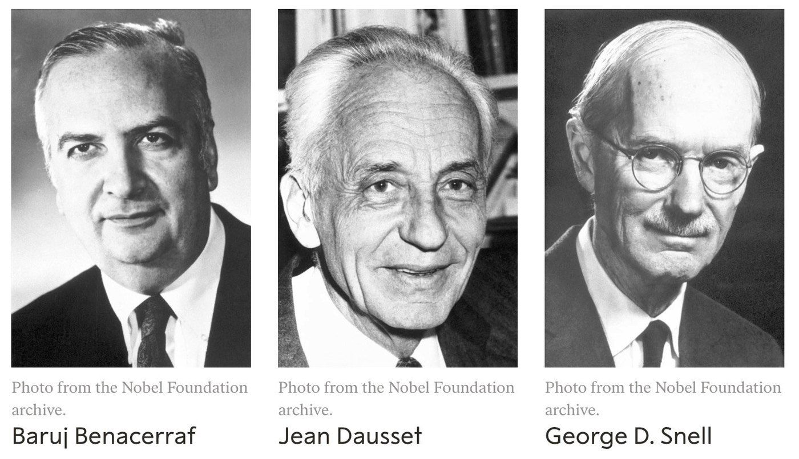
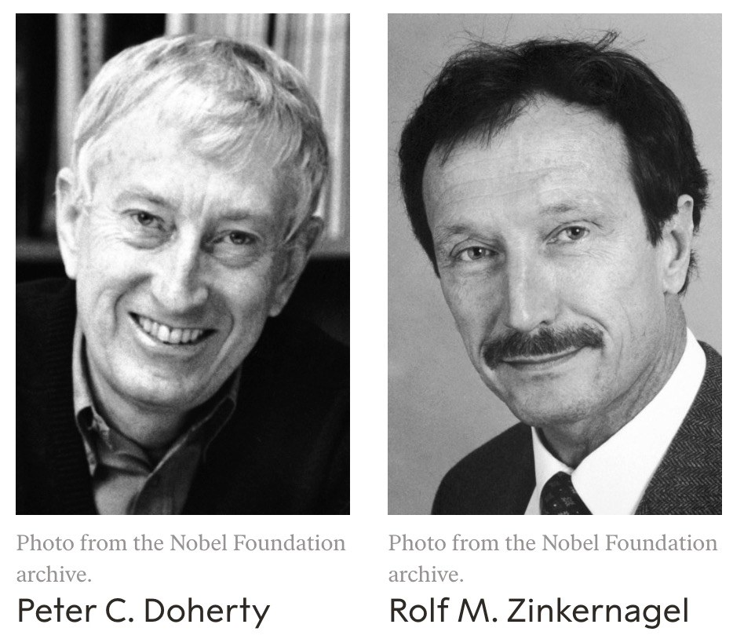
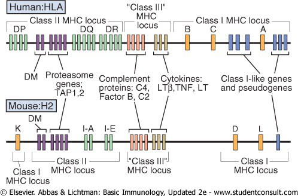
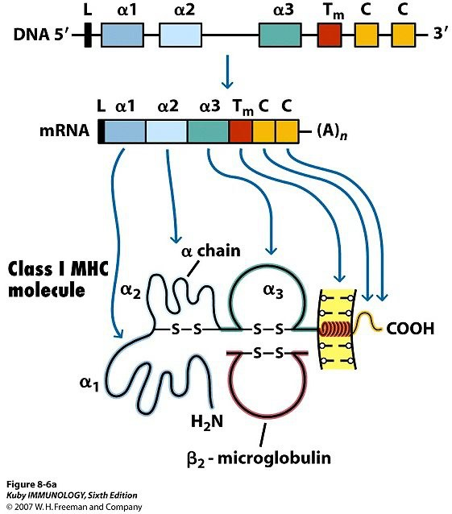
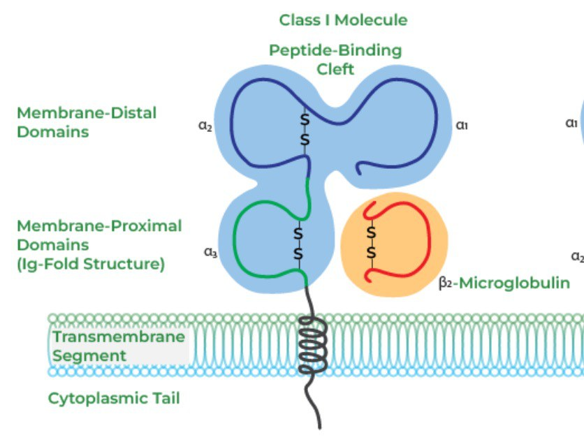
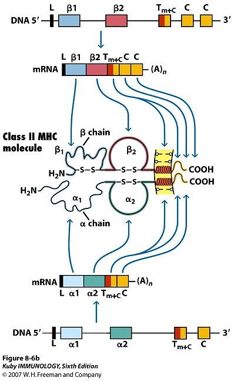
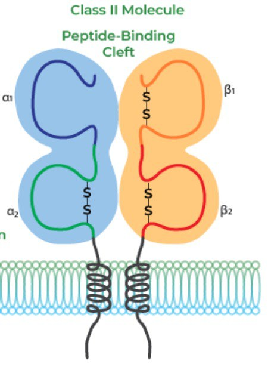

MHC and HLA — the Display CaseMHC و HLA — ویترین نمایش
A T cell cannot see a whole protein, and it cannot see anything in solution. It can only see a fragment of a protein, held up by another cell — and the molecule that does the holding is MHC. Two classes, two sources of peptide, two kinds of T cell. Almost every question in this Part is answered by asking one thing first: where did the peptide come from?سلول T نمیتواند یک پروتئین کامل را ببیند، و نمیتواند چیزی را در محلول ببیند. تنها میتواند قطعهای از پروتئین را ببیند که سلولی دیگر بالا نگه داشته است — و مولکولی که نگه میدارد MHC است. دو کلاس، دو منبع پپتید، دو نوع سلول T. تقریباً هر پرسشی در این بخش با پرسیدن یک چیزِ نخست پاسخ میگیرد: پپتید از کجا آمده است؟
By the end of this Part you should be able toدر پایان این بخش باید بتوانید
Name the genes, the chains, the cells and the function of each MHC class without hesitating.ژنها، زنجیرهها، سلولها و عملکرد هر کلاس MHC را بدون تردید نام ببرید.
Say which domains form the cleft and which bind the co-receptor — for both classes.بگویید کدام دومینها شکاف را میسازند و کدام به گیرندهٔ کمکی میچسبند — برای هر دو کلاس.
Explain why class I peptides are 8–10 residues and class II peptides can exceed 20.توضیح دهید چرا پپتیدهای کلاس I ۸ تا ۱۰ باقیماندهاند و پپتیدهای کلاس II میتوانند از ۲۰ بگذرند.
Give four clinical uses of HLA typing and one HLA-linked disease association with its number.چهار کاربرد بالینی تعیین نوع HLA و یک ارتباط بیماری وابسته به HLA با شمارهاش بدهید.
3.1Histocompatibility: the Words and the Lociسازگاری بافتی: واژهها و جایگاههای ژنی
Name decoder — the vocabulary of transplantationرمزگشای نام — واژگان پیوند
Histocompatibility antigen
A molecule that determines whether tissue is acceptedمولکولی که تعیین میکند بافت پذیرفته میشود یا نه
Split into major (the MHC itself, causing rapid rejection) and minor (ordinary polymorphic proteins whose peptides differ between individuals, causing slow rejection)به عمده (خودِ MHC، که رد سریع میدهد) و فرعی (پروتئینهای چندشکل معمولی که پپتیدهایشان میان افراد فرق دارد و رد کند میدهند) تقسیم میشود
MHC
Major histocompatibility complex — a cluster of genesکمپلکس سازگاری بافتی عمده — خوشهای از ژنها
On chromosome 6 in humans. The word names the gene cluster, not one proteinروی کروموزوم ۶ در انسان. این واژه نام خوشهٔ ژنی است، نه یک پروتئین
HLA
Human leukocyte antigensآنتیژنهای لکوسیتی انسان
The name of the human MHC locus. HLA = human MHC. They are the same thing said two waysنام جایگاه MHC انسانی. HLA = MHC انسانی. یک چیزند که به دو شکل گفته میشود
H-2
The mouse MHC locusجایگاه MHCموش
Every classic experiment in this field was done in mice, so the H-2 names appear constantly in the literatureهر آزمایش کلاسیک این حوزه در موش انجام شده، پس نامهای H-2 مدام در متون ظاهر میشوند
Syngeneic
Genetically identicalاز نظر ژنتیکی یکسان
Identical twins, or an inbred mouse strain. No rejectionدوقلوی همسان، یا سویهٔ موش همخون. بدون رد پیوند
Allogeneic
Genetically distinct, same speciesاز نظر ژنتیکی متفاوت، همان گونه
The ordinary transplant situation. Rejection unless HLA is matched and the patient is immunosuppressedوضعیت معمول پیوند. رد پیوند، مگر HLA جور شود و بیمار سرکوب ایمنی بگیرد
The historical irony worth knowing. MHC molecules were discovered because they cause transplant rejection, and they are named after that. But rejecting transplants is not their function — nothing evolved to reject a kidney graft. Their real job is the one in this Part: holding peptides up for T cells. Rejection is a side-effect of being the most variable protein in the population. The name is a permanent reminder that we found the molecule before we understood it.طنز تاریخیای که دانستنش میارزد. مولکولهای MHCبه این سبب کشف شدند که رد پیوند ایجاد میکنند و نامشان هم از همین است. اما رد پیوند عملکرد آنها نیست — هیچ چیزی تکامل نیافته تا پیوند کلیه را رد کند. کار واقعیشان همان است که در این بخش میآید: بالا نگهداشتن پپتیدها برای سلولهای T. رد پیوند، اثر جانبیِ متغیرترین پروتئین جمعیت بودن است. این نام یادآور همیشگی آن است که ما مولکول را پیش از فهمیدنش یافتیم.

Fig 3.1Nobel Prize 1980 — Baruj Benacerraf, Jean Dausset and George D. Snell, “for their discoveries concerning genetically determined structures on the cell surface that regulate immunological reactions.” They found the locus.نوبل ۱۹۸۰ — باروخ بناسراف، ژان دوسه و جورج اسنل، «برای کشفهایشان دربارهٔ ساختارهای ژنتیکیتعیینشدهٔ سطح سلول که واکنشهای ایمنی را تنظیم میکنند.» آنها جایگاه ژنی را یافتند.

Fig 3.2Nobel Prize 1996 — Peter C. Doherty and Rolf M. Zinkernagel, “for their discoveries concerning the specificity of the cell mediated immune defence.” They found MHC restriction: a cytotoxic T cell kills a virus-infected cell only if that cell carries the same MHC allele the T cell grew up with. A T cell recognises peptide and MHC, never peptide alone.نوبل ۱۹۹۶ — پیتر دوهرتی و رولف زینکرناگل، «برای کشفهایشان دربارهٔ اختصاصیت دفاع ایمنی سلولی.» آنها محدودیت MHC را یافتند: سلول T کشنده تنها وقتی سلول آلوده به ویروس را میکشد که آن سلول همان آلل MHC را داشته باشد که سلول T با آن بزرگ شده. سلول T پپتید وMHC را میشناسد، هرگز پپتید تنها را.

Fig 3.3 The locus, human above and mouse below. Read the human map from the left: class II (DP, DQ, DR) → class III → class I (B, C, A). Two things repay attention. First, the order is different in the mouse (class I K sits at the left-hand end), which is why you cannot transfer the map between species. Second, look at what sits in the class III region: the complement proteins C4, factor B and C2, and the cytokines TNF, LTα and LTβ. The gene cluster you learned as “transplantation genes” also carries half of the classical complement pathway from Session 2.جایگاه ژنی، انسان بالا و موش پایین. نقشهٔ انسانی را از چپ بخوانید: کلاس II (DP، DQ، DR) ← کلاس III ← کلاس I (B، C، A). دو نکته ارزش توجه دارد. نخست، ترتیب در موش متفاوت است (کلاس I یعنی K در انتهای چپ مینشیند)، و به همین سبب نمیتوان نقشه را میان گونهها منتقل کرد. دوم، ببینید در ناحیهٔ کلاس III چه نشسته است: پروتئینهای کمپلمانیِ C4، فاکتور B و C2، و سایتوکاینهای TNF، LTα و LTβ. همان خوشهٔ ژنی که بهعنوان «ژنهای پیوند» آموختید، نیمی از مسیر کلاسیک کمپلمان از جلسهٔ ۲ را هم حمل میکند.
3.2Class I — Genes, Structure, Functionکلاس I — ژنها، ساختار، عملکرد
Molecule card · MHC IHLA class IHLA کلاس I
Genesژنها
HLA-A, HLA-B, HLA-C — three loci, each with two alleles, both expressed. Every person therefore displays six different class I molecules.HLA-A، HLA-B، HLA-C — سه جایگاه ژنی، هر کدام دو آلل که هر دو بیان میشوند. پس هر فرد شش مولکول کلاس I متفاوت نمایش میدهد.
Distributionپراکندگی
Every nucleated cell in the body.This follows from the function. Any cell can be infected by a virus, so every cell must be able to report what it is making. The exceptions prove the rule: mature red cells have no nucleus and no class I — which is exactly why ABO and Rh, not HLA, govern ordinary blood transfusion.هر سلول هستهدار بدن.این از عملکرد نتیجه میشود. هر سلولی ممکن است به ویروس آلوده شود، پس هر سلولی باید بتواند گزارش دهد چه میسازد. استثناها قاعده را ثابت میکنند: گلبول قرمز بالغ نه هسته دارد نه کلاس I — و دقیقاً به همین سبب در ترانسفوزیون معمولی ABO و Rh حاکماند، نه HLA.
Structureساختار
α chain, 45 kDa — the only chain encoded in the MHC. Three domains: α1, α2, α3.زنجیرهٔ α، ۴۵ کیلودالتون — تنها زنجیرهٔ رمزگذاریشده در MHC. سه دومین: α1، α2، α3.
β₂-microglobulin, 12 kDa — a small invariant partner, and it is encoded on chromosome 15, not in the MHC.بتا-۲-میکروگلوبولین، ۱۲ کیلودالتون — شریکی کوچک و غیرمتغیر، و روی کروموزوم ۱۵ رمزگذاری شده، نه در MHC.
Peptide-binding cleft: α1 + α2 — both walls come from the same chain.شکاف اتصال پپتید: α1 + α2 — هر دو دیواره از یک زنجیره میآیند.
CD8 binding site: α3 — non-polymorphic, membrane-proximal, Ig-fold.جایگاه اتصال CD8: α3 — غیرچندشکل، نزدیک غشا، با تاخوردگی ایمونوگلوبولینی.
Functionعملکرد
Recognise and present ENDOGENOUS antigens to CD8⁺ T cells. Endogenous means made inside this cell — viral proteins, tumour proteins, the cell's own proteins. The message is: “here is what I am currently synthesising.”شناسایی و عرضهٔ آنتیژنهای درونزاد به سلولهای TCD8 مثبت. درونزاد یعنی ساختهشده درون همین سلول — پروتئین ویروسی، پروتئین توموری، پروتئینهای خود سلول. پیام این است: «این چیزی است که هماکنون میسازم.»

Fig 3.4 From gene to molecule. Each exon of the class I gene becomes one domain: α1, α2, α3, then the transmembrane segment and the cytoplasmic tail. β₂-microglobulin arrives from a gene on a different chromosome and folds underneath.از ژن تا مولکول. هر اگزون ژن کلاس I یک دومین میشود: α1، α2، α3، سپس بخش درونغشایی و دُم سیتوپلاسمی. بتا-۲-میکروگلوبولین از ژنی روی کروموزومی دیگر میرسد و در زیر تا میخورد.

Fig 3.5 The same molecule as a diagram. Note the division into membrane-distal domains (α1 + α2, forming the cleft, and this is where the polymorphism lives) and membrane-proximal domains (α3 and β₂m, both Ig folds, both invariant, and α3 is where CD8 binds).همان مولکول بهشکل نمودار. به تقسیم آن توجه کنید: دومینهای دور از غشا (α1 + α2 که شکاف را میسازند و چندشکلی همینجا زندگی میکند) و دومینهای نزدیک غشا (α3 و بتا-۲-میکروگلوبولین، هر دو با تاخوردگی ایمونوگلوبولینی، هر دو غیرمتغیر، و α3 همانجاست که CD8 میچسبد).
Exam Trap — β₂-microglobulin is not an MHC gene productدام امتحانی — بتا-۲-میکروگلوبولین فرآوردهٔ ژن MHC نیست
The class I molecule has two chains, but only one of them is encoded in the MHC. β₂-microglobulin sits on chromosome 15, is identical in everybody, and is not polymorphic. Two consequences follow. First, β₂m cannot contribute to transplant mismatch. Second, a mutation in β₂m abolishes surface class I on every cell at once — it is a form of bare lymphocyte syndrome type I, in which CD8 T cells fail to develop. Class II, by contrast, has both chains encoded in the MHC.مولکول کلاس I دو زنجیره دارد، اما فقط یکی از آنها در MHC رمزگذاری شده است. بتا-۲-میکروگلوبولین روی کروموزوم ۱۵ است، در همه یکسان است و چندشکل نیست. دو پیامد دارد. نخست، بتا-۲-میکروگلوبولین نمیتواند در ناسازگاری پیوند نقش داشته باشد. دوم، جهش در آن، کلاس I سطحی را در همهٔ سلولها یکجا از بین میبرد — نوعی سندرم لنفوسیت برهنه نوع I که در آن سلولهای TCD8 تکامل نمییابند. در مقابل، کلاس IIهر دو زنجیرهاش در MHC رمزگذاری شده است.
3.3Class II — Genes, Structure, Functionکلاس II — ژنها، ساختار، عملکرد
Molecule card · MHC IIHLA class IIHLA کلاس II
Genesژنها
HLA-DR, HLA-DQ, HLA-DP — and here both the α and the β chain are encoded in the MHC.HLA-DR، HLA-DQ، HLA-DP — و اینجا هر دو زنجیرهٔ α و β در MHC رمزگذاری شدهاند.
Distributionپراکندگی
Professional antigen-presenting cells — B cells, dendritic cells, macrophages.سلولهای عرضهکنندهٔ حرفهای — سلول B، سلول دندریتیک، ماکروفاژ.
Thymic epithelial cells — where CD4 T cells are selected.سلولهای اپیتلیال تیموس — جایی که سلولهای TCD4 گزینش میشوند.
Activated T cells — in humans (not in mice), an activated T cell expresses class II. It is used as an activation marker.سلولهای T فعالشده — در انسان (نه در موش)، سلول T فعال کلاس II بیان میکند. بهعنوان نشانگر فعالشدن بهکار میرود.
Structureساختار
α chain 35 kDa and β chain 28 kDa — two similar chains, not one big and one small.زنجیرهٔ α ۳۵ کیلودالتون و زنجیرهٔ β ۲۸ کیلودالتون — دو زنجیرهٔ مشابه، نه یکی بزرگ و یکی کوچک.
Peptide-binding cleft: α1 + β1 — one wall from each chain.شکاف اتصال پپتید: α1 + β1 — از هر زنجیره یک دیواره.
Recognise and present EXOGENOUS antigens to CD4⁺ T cells. Exogenous means taken in from outside by phagocytosis or endocytosis and digested in the endosome. The message is: “here is what I found out there.”شناسایی و عرضهٔ آنتیژنهای برونزاد به سلولهای TCD4 مثبت. برونزاد یعنی از بیرون گرفتهشده با فاگوسیتوز یا اندوسیتوز و هضمشده در اندوزوم. پیام این است: «این چیزی است که آن بیرون یافتم.»

Fig 3.6 Two genes, two mRNAs, two chains — compare with Fig 3.4, where only one chain came from the MHC. The α and β chains are made separately and pair in the endoplasmic reticulum.دو ژن، دو mRNA، دو زنجیره — با شکل ۳.۴ مقایسه کنید که در آن تنها یک زنجیره از MHC میآمد. زنجیرههای α و β جداگانه ساخته میشوند و در شبکهٔ آندوپلاسمی جفت میشوند.

Fig 3.7 The class II molecule is symmetrical: α1 and β1 above forming the cleft, α2 and β2 below as the Ig-fold stalk, and two transmembrane segments rather than one. Set this beside Fig 3.5 and the difference between the classes becomes visual rather than verbal.مولکول کلاس IIمتقارن است: α1 و β1 در بالا که شکاف را میسازند، α2 و β2 در پایین بهعنوان ساقهٔ ایمونوگلوبولینی، و دو بخش درونغشایی بهجای یکی. این را کنار شکل ۳.۵ بگذارید تا تفاوت دو کلاس دیداری شود نه کلامی.
3.4The Peptide-Binding Cleft: Hot Dog and Pitaشکاف اتصال پپتید: هاتداگ و نان پیتا
Fig 3.8Class I = a hot dog. The bun is closed at both ends, so the sausage must be cut to fit: 8–10 amino acids, no more. Conserved residues at each end of the class I cleft grip the peptide's N- and C-termini.کلاس I = هاتداگ. نان از هر دو سر بسته است، پس سوسیس باید بریده شود تا جا شود: ۸ تا ۱۰ اسیدآمینه، نه بیشتر. باقیماندهٔ حفاظتشده در هر سر شکاف کلاس I، انتهای آمینی و کربوکسیلی پپتید را میگیرد.Fig 3.9Class II = an open pita. The bread is open at both ends, so the filling can hang out: peptides of 13–25 residues, and over 20 is routine. The cleft grips the middle of the peptide and lets the ends dangle.کلاس II = نان پیتای باز. نان از هر دو سر باز است، پس مغزی میتواند بیرون بزند: پپتیدهای ۱۳ تا ۲۵ باقیمانده، و بیش از ۲۰ عادی است. شکاف، میانهٔ پپتید را میگیرد و میگذارد دو سر آویزان بماند.
Table 3.1 The two cleftsجدول ۳.۱ — دو شکاف
Class Iکلاس I
Class IIکلاس II
Walls of the cleftدیوارههای شکاف
α1 + α2 — one chainα1 + α2 — یک زنجیره
α1 + β1 — two chainsα1 + β1 — دو زنجیره
Shapeشکل
Closed at both ends (a pocket)از هر دو سر بسته (جیب)
Open at both ends (a groove)از هر دو سر باز (شیار)
Peptide lengthطول پپتید
8–10 amino acids۸ تا ۱۰ اسیدآمینه
Over 20 can be accommodatedبیش از ۲۰ هم جا میشود
Where the peptide came fromپپتید از کجا آمده
Endogenous — cytosolic proteins, chopped by the proteasome, pumped into the ER by TAPدرونزاد — پروتئینهای سیتوزولی که پروتئازوم خردشان میکند و TAP به شبکهٔ آندوپلاسمی میفرستدشان
Exogenous — endocytosed proteins, digested in the acidified endosomeبرونزاد — پروتئینهای اندوسیتوزشده که در اندوزوم اسیدی هضم میشوند
Read byخوانده میشود توسط
CD8⁺ cytotoxic T cellsسلولهای T کشندهٔ CD8 مثبت
CD4⁺ helper T cellsسلولهای T کمکیِ CD4 مثبت
Why the shapes differ — and it is not arbitraryچرا شکلها فرق دارند — و دلبخواه نیست
Class I peptides are generated by the proteasome, a machine that cuts cytosolic proteins into fragments of a characteristic length and delivers them through TAP into the endoplasmic reticulum, where the class I molecule is waiting and folds around the peptide. A closed pocket is possible because the supply is size-matched.پپتیدهای کلاس I را پروتئازوم میسازد، ماشینی که پروتئینهای سیتوزولی را به قطعاتی با طول مشخص میبُرد و از راه TAP به شبکهٔ آندوپلاسمی میفرستد، جایی که مولکول کلاس I منتظر است و گرداگرد پپتید تا میخورد. جیب بسته ممکن است چون عرضه با اندازه جور شده است.
Class II peptides are generated by endosomal proteases (cathepsins) chewing a protein at whatever bonds they can reach. The product is a ragged mixture of lengths. An open groove is the only design that can hold a peptide of unpredictable length — so the shape of the cleft follows the machinery that fills it.پپتیدهای کلاس II را پروتئازهای اندوزومی (کاتپسینها) میسازند که پروتئین را از هر پیوندی که دستشان برسد میجوند. فرآورده مخلوطی ناهموار از طولهاست. شیار باز تنها طرحی است که میتواند پپتیدی با طول پیشبینیناپذیر را نگه دارد — پس شکل شکاف از ماشینی پیروی میکند که پُرش میکند.
3.5HLA in Clinical MedicineHLA در طب بالینی
Table 3.2 The lecturer's four clinical headingsجدول ۳.۲ — چهار سرفصل بالینی مدرّس
Useکاربرد
What it means in practiceدر عمل یعنی چه
1. Transplantation۱. پیوند
HLA typing — determine the donor's and recipient's alleles and match as many as possible, especially HLA-A, -B and -DR. Cross-match — mix recipient serum with donor lymphocytes; if the recipient already has anti-donor HLA antibodies the cells are killed, and a positive cross-match is an absolute contraindication because it predicts hyperacute rejection.تعیین نوع HLA — آللهای دهنده و گیرنده را مشخص و تا حد ممکن جور کنید، بهویژه HLA-A، -B و -DR. کراسمچ — سرم گیرنده را با لنفوسیت دهنده مخلوط کنید؛ اگر گیرنده پیشاپیش آنتیبادی ضد HLA دهنده داشته باشد سلولها کشته میشوند، و کراسمچ مثبت منع مطلق است چون رد فوقحاد را پیشبینی میکند.
2. Abnormal expression۲. بیان غیرطبیعی
Tumours down-regulate class I to hide from CD8 T cells — an effective escape, except that a cell with no class I is exactly what an NK cell kills (“missing-self”). Autoimmune disease increases class II on cells that should not have it, such as thyrocytes in Graves' disease, which start presenting their own antigens to CD4 T cells.تومورها کلاس I را پایین میآورند تا از سلولهای TCD8 پنهان شوند — گریزی کارآمد، جز آنکه سلول بدون کلاس I دقیقاً همان است که سلول NK میکشد («خودیِ غایب»). بیماری خودایمن کلاس II را بالا میبرد روی سلولهایی که نباید داشته باشند، مانند تیروسیتها در بیماری گریوز، که شروع به عرضهٔ آنتیژنهای خودشان به سلول TCD4 میکنند.
3. Disease association۳. ارتباط با بیماری
The lecturer's example: ankylosing spondylitis and HLA-B27, present in 58–97% of patients depending on the population studied, against roughly 8% of the general European population. Note what an “association” is and is not: B27 is neither necessary nor sufficient, it is a risk allele.مثال مدرّس: اسپوندیلیت آنکیلوزان و HLA-B27 که بسته به جمعیت مطالعهشده در ۵۸ تا ۹۷٪ بیماران هست، در برابر حدود ۸٪ جمعیت عمومی اروپایی. توجه کنید «ارتباط» چه هست و چه نیست: B27 نه لازم است نه کافی، یک آلل خطر است.
4. Medical jurisprudence۴. پزشکی قانونی
Because HLA is codominantly inherited as a haplotype block, a child's HLA type is one haplotype from each parent. Before DNA fingerprinting this was the standard tool for paternity testing and forensic identification, and HLA haplotypes are still used to trace family relationships in transplant donor searches.چون HLAبهصورت بلوک هاپلوتیپی و همبارز به ارث میرسد، نوع HLA کودک یک هاپلوتیپ از هر والد است. پیش از انگشتنگاری DNA، ابزار استاندارد تعیین پدری و شناسایی قانونی بود، و هاپلوتیپهای HLA هنوز در جستوجوی دهندهٔ پیوند برای ردیابی نسبت خانوادگی بهکار میروند.
Clinical Correlation — HLA alleles you may be asked to test forارتباط بالینی — آللهای HLA که ممکن است آزمایششان را بخواهند
HLA-DQ2 / DQ8 → coeliac disease. Their absence is the useful result: it essentially rules the diagnosis out.HLA-DQ2 / DQ8 ← بیماری سلیاک. نبودشان نتیجهٔ سودمند است: عملاً تشخیص را رد میکند.
HLA-B*57:01 → abacavir hypersensitivity. Testing before prescribing is mandatory in HIV care and has essentially abolished the reaction.HLA-B*57:01 ← حساسیت به آباکاویر. آزمایش پیش از تجویز در مراقبت HIVالزامی است و عملاً این واکنش را از میان برده.
HLA-B*15:02 → carbamazepine-induced Stevens–Johnson syndrome, tested for in Han Chinese and several South-East Asian populations.HLA-B*15:02 ← سندرم استیونس–جانسون ناشی از کاربامازپین، که در جمعیت هان چین و چند جمعیت جنوب شرق آسیا آزمایش میشود.
Inside–eight, outside–four.Class I shows what is made inside the cell, to CD8. Class II shows what came from outside, to CD4. Add the rule of eight from §1.5 (CD4 × II = 8, CD8 × I = 8) and you can reconstruct the entire table from two arithmetic facts.درون–هشت، بیرون–چهار.کلاس I آنچه درون سلول ساخته شده را به CD8 نشان میدهد. کلاس II آنچه از بیرون آمده را به CD4. قاعدهٔ هشتِ بخش ۱.۵ را هم بیفزایید (CD4 × II = 8، CD8 × I = 8) و میتوانید کل جدول را از دو واقعیت حسابی بازسازی کنید.